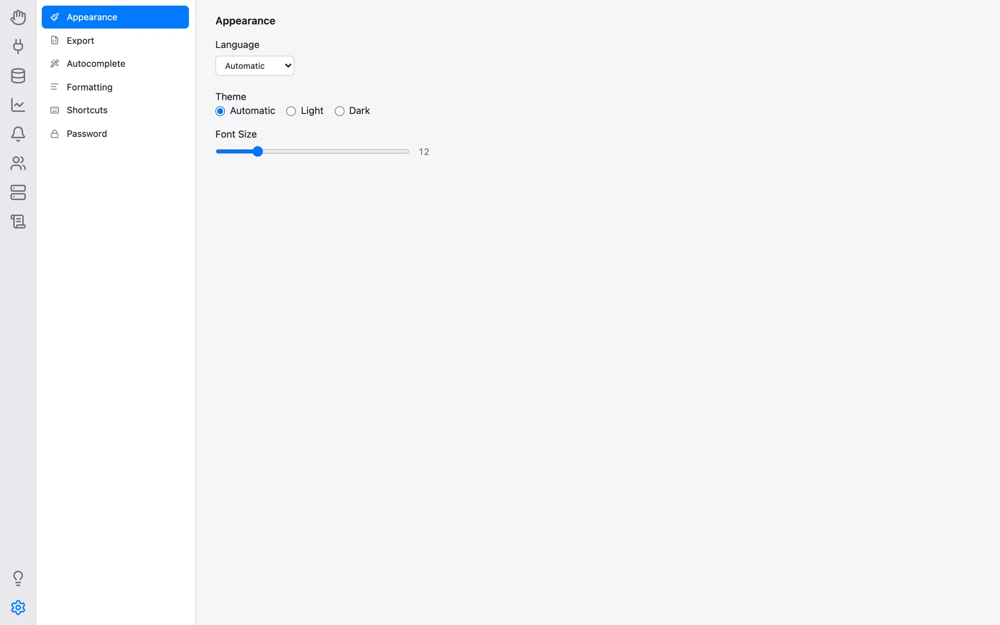
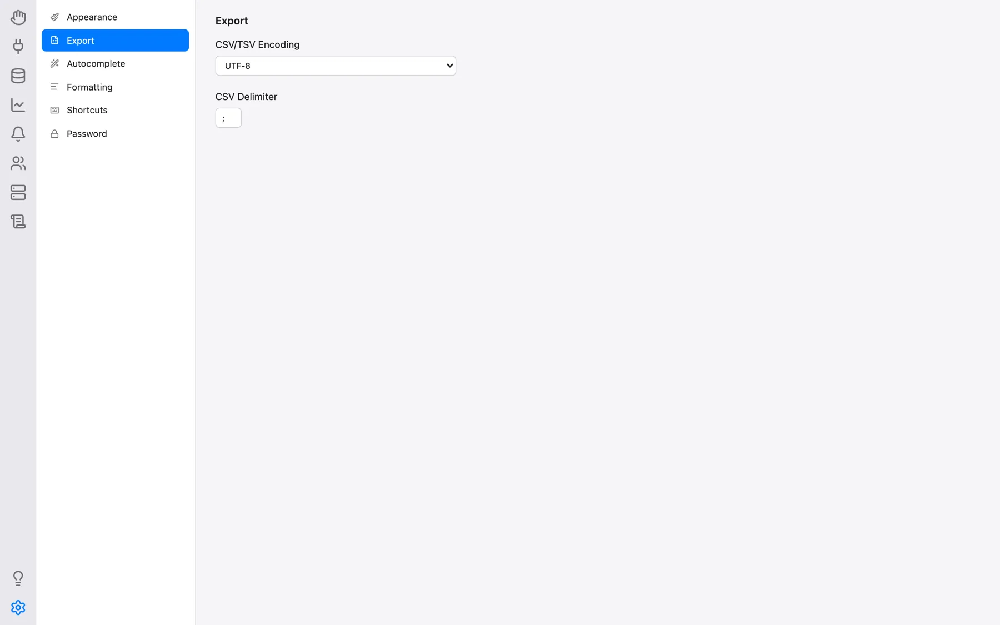
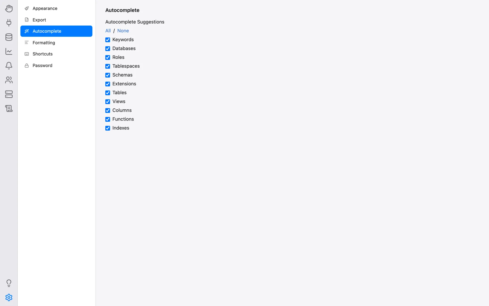
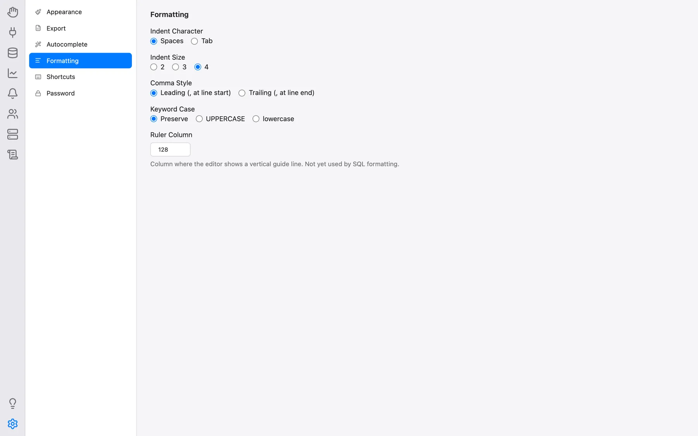
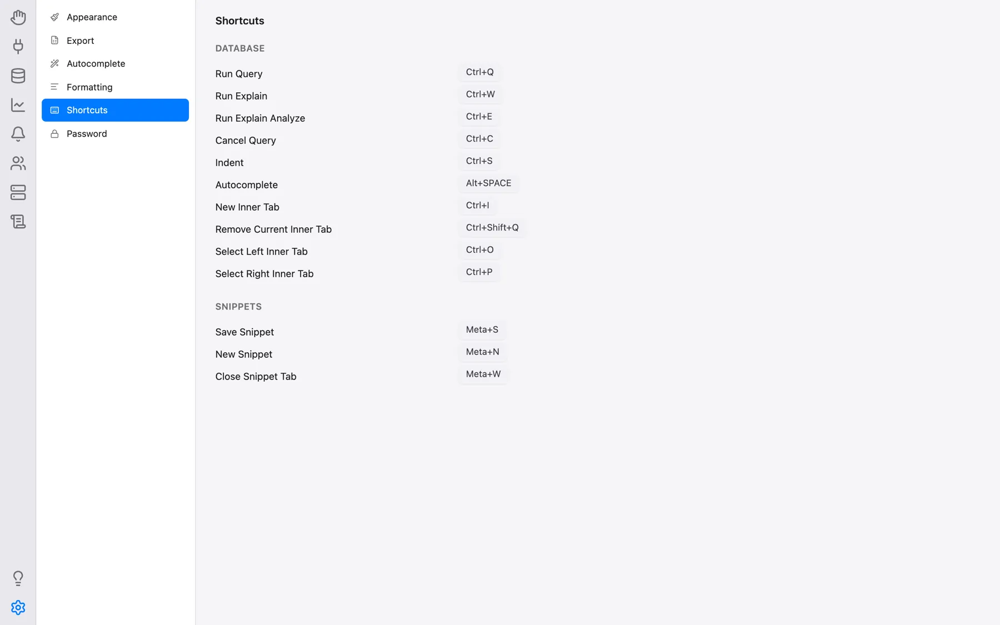

Definições e Idiomas
Cada utilizador do OmniDB tem as suas próprias preferências: idioma da interface, tema, tamanho do tipo de letra, opções de exportação, categorias do preenchimento automático, estilo de formatação SQL e atalhos de teclado. Todas são definidas em Definições e guardadas por utilizador na base de dados de utilizador do OmniDB, pelo que o acompanham em qualquer browser ou máquina onde inicie sessão no mesmo servidor OmniDB.
Abrir as Definições
Clique no ícone da roda dentada no fundo da barra esquerda. Na aplicação de ambiente de trabalho também pode usar OmniDB > Preferências… na barra de menus (Cmd-, no macOS, Ctrl-, nos restantes), e Ajuda > Atalhos de Teclado abre as Definições diretamente na categoria Atalhos de teclado.
As Definições são uma vista de dois painéis: as categorias à esquerda (Aparência, Exportar, Preenchimento automático, Formatação, Atalhos de teclado, Palavra-passe e, apenas para superutilizadores, Conta) e os campos da categoria selecionada à direita. Não existe botão Guardar — cada campo é guardado assim que o altera (os campos de texto pouco depois de parar de escrever). A única exceção é a palavra-passe, que tem o seu próprio botão Alterar palavra-passe.

Aparência
- Idioma: o idioma de toda a interface — Automático, Čeština, Deutsch, English, Español, Français, Italiano, Português, 日本語 (japonês) ou 한국어 (coreano). Automático (a predefinição) segue o idioma pedido pelo seu browser ou sistema operativo e recorre ao inglês se esse idioma não estiver disponível. Mudar o idioma recarrega a página. O mesmo se aplica à página de início de sessão e, na aplicação de ambiente de trabalho, à barra de menus (consulte Aplicação de Ambiente de Trabalho). Os nomes de motores de base de dados, formatos de ficheiro e codificações de caracteres, as palavras-chave SQL e as mensagens provenientes do próprio servidor de base de dados não são traduzidos.
- Tema: Automático (segue a definição clara/escura do sistema operativo e muda em tempo real quando esta se altera), Claro ou Escuro.
- Tamanho do tipo de letra: um cursor de 10 a 20 (predefinição 12) que ajusta a escala do texto da interface; o valor atual é mostrado ao lado.
Exportar
- Codificação CSV/TSV: a codificação de caracteres das exportações CSV e TSV, agrupada em Unicode, páginas de códigos do Windows, ISO 8859, cirílico, Ásia Oriental, DOS, Mac e EBCDIC. A predefinição é UTF-8 with BOM, que as aplicações de folha de cálculo, como o Excel, reconhecem automaticamente como UTF-8.
- Delimitador CSV: o separador de campos usado nas exportações CSV (predefinição
;).
Consulte Escrever Consultas SQL para exportar resultados de consultas.

Preenchimento automático
Sugestões de preenchimento automático escolhe as categorias que o preenchimento automático do editor SQL oferece: Palavras-chave, Bases de dados, Roles, Tablespaces, Esquemas, Extensões, Tabelas, Vistas, Colunas, Funções e Índices (Todos/Nenhum ativam ou desativam todas de uma vez).

Formatação
Estas opções controlam a forma como Indentar SQL (o formatador dos separadores de consulta e o botão Indentação dos Snippets) reescreve o seu SQL, e como são dispostos os modelos SQL gerados a partir da árvore da base de dados:
- Carácter de indentação: Espaços (predefinição) ou Tabulação;
- Tamanho da indentação: 2, 3 ou 4 (predefinição 4);
- Estilo de vírgulas: No início da linha (, no início) (predefinição) ou No fim da linha (, no fim);
- Maiúsculas/minúsculas das palavras-chave: Preservar (predefinição), MAIÚSCULAS ou minúsculas;
- Coluna-guia: onde cada editor SQL desenha a sua linha-guia vertical (24–999, predefinição 128). É apenas uma guia visual; o formatador não quebra as linhas nessa coluna.

Atalhos de teclado
Os atalhos de teclado próprios do OmniDB, em dois grupos. Para alterar um, clique no respetivo botão e prima a nova combinação de teclas, ou prima Esc para cancelar. As predefinições são:
| Ação | Windows/Linux | Mac |
|---|---|---|
| Base de dados (separadores de consulta e de consola) | ||
| Executar consulta | Alt-Q | Ctrl-Q |
| Executar Explain | Alt-W | Ctrl-W |
| Executar Explain Analyze | Alt-E | Ctrl-E |
| Cancelar consulta | Alt-C | Ctrl-C |
| Indentação | Alt-S | Ctrl-S |
| Preenchimento automático | Ctrl-Space | Option-Space |
| Novo separador interno | Alt-I | Ctrl-I |
| Fechar separador interno atual | Alt-Shift-Q | Ctrl-Shift-Q |
| Selecionar separador interno à esquerda | Alt-O | Ctrl-O |
| Selecionar separador interno à direita | Alt-P | Ctrl-P |
| Snippets (secção Snippets) | ||
| Guardar snippet | Ctrl-S | Command-S |
| Novo snippet | Ctrl-N | Command-N |
| Fechar separador de snippet | Ctrl-W | Command-W |
Os atalhos de edição de texto do próprio editor SQL (seleção, cursores múltiplos, dobragem de código, localizar e substituir, …) estão listados à parte em Atalhos de Teclado do Editor. A barra de menus da aplicação de ambiente de trabalho acrescenta atalhos para mudar de secção (consulte Aplicação de Ambiente de Trabalho).

Palavra-passe
Escreva a Nova palavra-passe e repita-a em Confirmar; Alterar palavra-passe fica disponível assim que ambas coincidirem. Alterar a sua palavra-passe termina as suas outras sessões. Esta categoria só é útil no modo servidor — a aplicação de ambiente de trabalho inicia sessão automaticamente.
Conta
Mostrada apenas a superutilizadores: Gerir utilizadores abre a janela Gestão de utilizadores, onde os utilizadores do OmniDB são adicionados, editados e removidos — consulte Criar Utilizadores e Ligações.